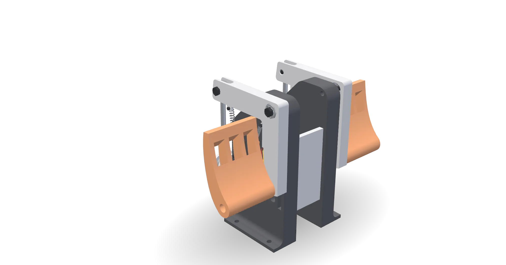
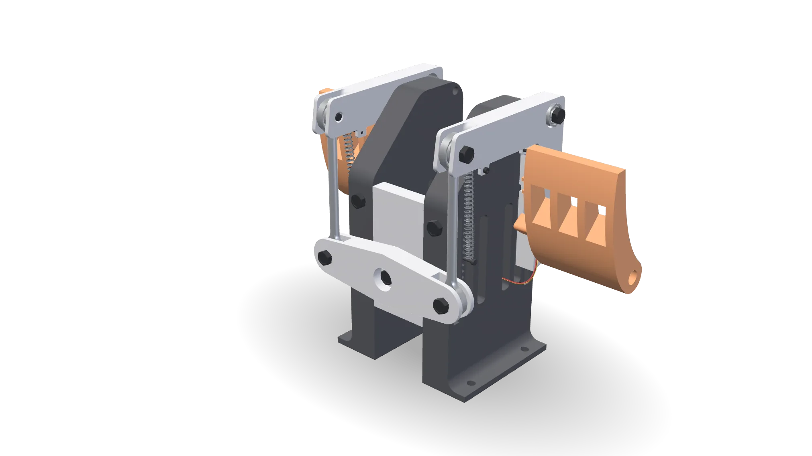
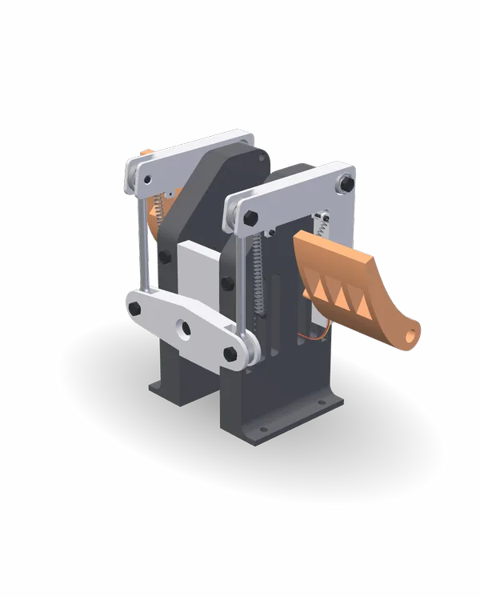

I fly ultralights and consumer sim pedals never felt right, so I built my own. Fighter style geometry, three axes, Hall sensors instead of potentiometers.
04 / 05

Contactless Hall sensing
Timeline
2026
Status
In daily use at my sim
HighlightsRudder pedals
Highlights
3
Independent axes
0
Potentiometers in the signal path
USB HID
No drivers, any simulator
A1301
Contactless Hall sensing
How it worksMechanism + firmware / 2026
How it works
01
Mechanism
I designed it in SolidWorks and printed it, iterating on pivot placement and return feel.

The CAD assembly driven through its real linkage: yaw both ways, each toe brake, then differential braking
02
Sensing
Each axis uses an A1301 Hall effect sensor reading a magnet on the moving part. No contact, nothing to wear.
A1301 Hall sensor and magnet
03
Firmware
The Pro Micro shows up as a standard USB gamepad. No driver needed.
The Pro Micro that replaced the counterfeit Teensy
SpecsRudder pedals
Tech specs
Tech specs
Rudder pedals

Timeline
2026
Status
In daily use at my sim
Key figures
3 Independent axes
0 Potentiometers in the signal path
USB HID No drivers, any simulator
A1301 Contactless Hall sensing
CAD animations rendered from the source assemblies. Aircraft models are third-party, illustration only.